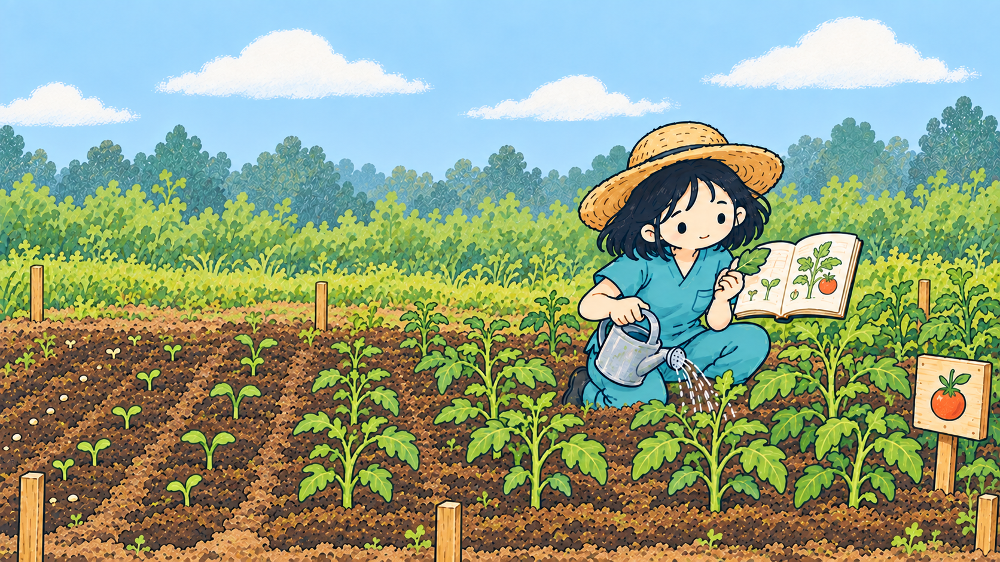

OUTCOME · ACTION PROMPT
아웃컴·액션
내 Vision에 가까워졌음을 보여주는 관찰 가능한 변화와, 앞으로 12주 동안 직접 해볼 작은 실험을 만듭니다.
비전 찾기 결과의 `MY VISION`과 `MY FUTURE SCENE`을 함께 붙여넣으면 더 정확해요.

YOU WILL GET
OUTCOME DRAFT
NEXT 12 WEEKS
MY 12-WEEK COMPASS
작은 실험은 함께 볼 때 더 오래 갑니다
세운 계획을 거창하게 증명할 필요는 없어요. 이번 12주에 확인하고 싶은 Outcome과 첫 Action을 IGP 커뮤니티에 나눠주세요. 막막한 사람에게는 이론보다 먼저 움직여본 동료의 기록이 더 든든한 이정표가 됩니다.